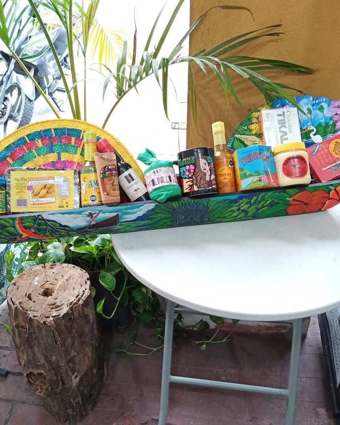
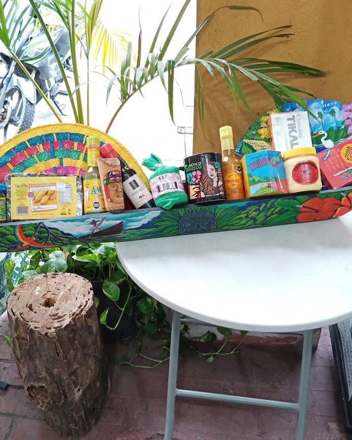

En este espacio usted podrá conocer algunos de nuestros productos más famosos
Productos |
|
|---|---|
| Quesos botaneros de la sierra | Cayuco con productos Tabasqueños |
| Rompope La cabaña | Licor maracuyá |  |  |
Productos |
|
|---|---|
| Quesos botaneros de la sierra | Cayuco con productos Tabasqueños |
| Rompope La cabaña | Licor maracuyá |  | |